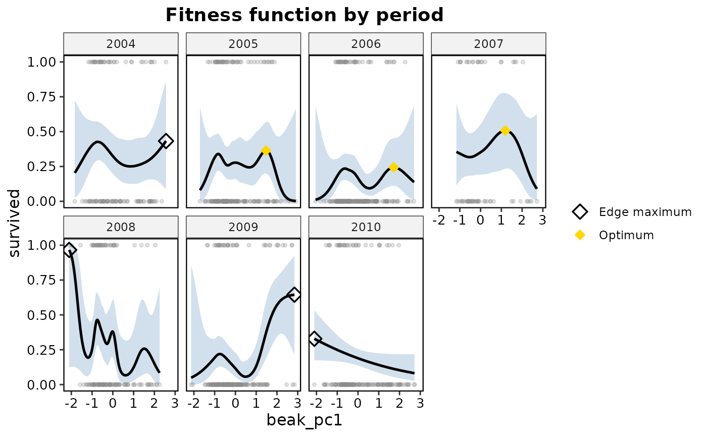
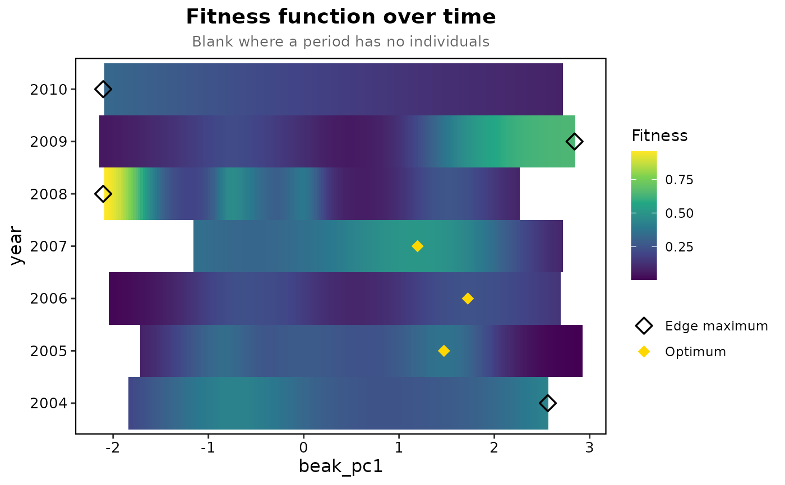

Plot fitness functions and landscapes over time
Source:R/plot_temporal_landscape.R
plot_temporal_landscape.RdPlot fitness functions and landscapes over time
Usage
plot_temporal_landscape(
tl,
type = c("panels", "heatmap"),
show_points = TRUE,
show_landscape = TRUE,
show_optimum = TRUE,
connect = FALSE,
bins = 10,
ncol = NULL,
...
)Arguments
- tl
Output of
temporal_landscape().- type
"panels"draws one panel per period: the fitness function with its band and the individuals for one trait, the fitness surface for two."heatmap", for one trait only, draws fitness against trait and period in one panel, with the position of the highest fitness in each period marked.- show_points
Logical; draw the individuals in each panel.
- show_landscape
Logical; for one trait, also draw each period's adaptive landscape as a dashed curve.
- show_optimum
Logical; mark the highest fitted fitness in each period, as a gold diamond when it lies inside the data and an open one when it sits at the edge of the range.
- connect
Logical; in the heat map, join the highest fitness of successive periods with a line. Default is
FALSE, since a maximum at the edge of the range is not a peak.- bins
Contour bins for two-trait panels.
- ncol
Number of panel columns.
- ...
Additional arguments passed to
ggplot2::labs().
Examples
prep <- prepare_selection_data(finch_yearly, "survived", "beak_pc1")
years <- temporal_landscape(prep, "survived", "beak_pc1", "year", landscape = FALSE)
#> 2004: n = 110, mean fitness 0.273, edf 2.5, 1 interior peak, highest fitness at the edge of the data
#> 2005: n = 185, mean fitness 0.205, edf 3.9, 2 interior peaks
#> 2006: n = 233, mean fitness 0.086, edf 1.0, 0 interior peaks, highest fitness at the edge of the data
#> 2007: n = 61, mean fitness 0.262, edf 1.7, 1 interior peak
#> 2008: n = 127, mean fitness 0.205, edf 6.4, 3 interior peaks
#> 2009: n = 196, mean fitness 0.153, edf 4.0, 1 interior peak, highest fitness at the edge of the data
#> 2010: n = 175, mean fitness 0.120, edf 1.0, 0 interior peaks, highest fitness at the edge of the data
plot_temporal_landscape(years, ncol = 4)

plot_temporal_landscape(years, type = "heatmap")
